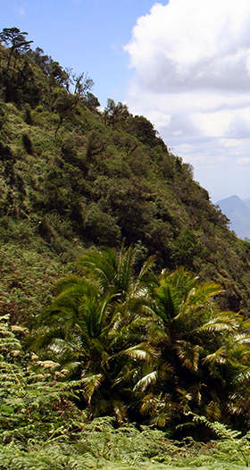
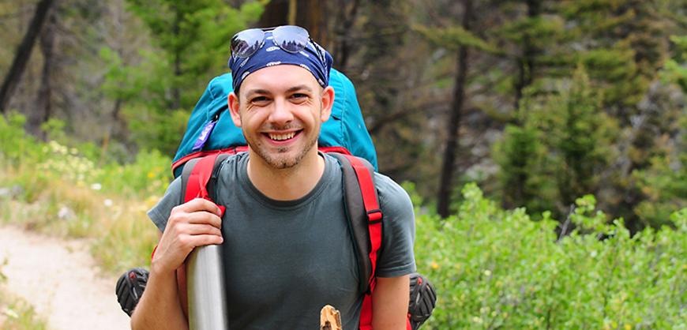
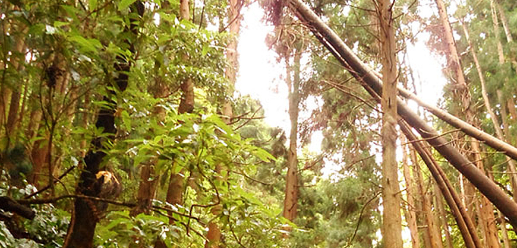
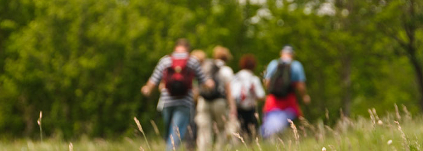

Our work
Where the orangutan thrives, the rainforest thrives – affecting not only every creature that depends on the rainforest for its existence, but the survival of humankind itself.
Research
CONORA’s goal is, ultimately, to save orangutan populations from extinction and to better the lives of individual orangutans. To achieve this goal, CONORA runs different programs which address these issues from different perspectives.
Forest Protection:
CONORA works in partnership with the Indonesian Ministry of Forestry to ensure the protection of Tanjung Puting National Park against illegal encroachment and extraction activities, such as logging, mining, forest conversion, and fire.
Rehabilitation:
CONORA runs the Orangutan Care Center and Quarantine in Pasir Panjang, Central Kalimantan. The Care Center looks after 330 rescued ex-captive orphan orangutans whose mothers have been killed.
At the Care Center, the orphans receive medical care and regular outings to the forest. OFI’s goal is to rehabilitate these orphans to life in the wild so that they may eventually be released back into the forest at one of our release sites.
EDUCATION:
CONORA believes in the value of educating local communities, the Indonesian people, and the world, about the value of forest and wildlife conservation, and specifically wild orangutan conservation. To this end, CONORA produces educational programs for schools, conducts public lectures, organizes conferences and seminars, and publishes the English newsletter.
CONORA supports a research program at Camp Leakey in Tanjung Puting National Park. Since 1971, when CONORA's president Dr. Biruté Mary Galdikas first established Camp Leakey, research in this area has focused on many aspects of orangutan behavior and ecology, as well as other topics involving other species of plants and animals.
Research at Camp Leakey has been conducted by dozens of scientists and students from around the world. The wild orangutan research at Camp Leakey is one of the longest continuous studies of any wild animal population ever carried out in the history of science.
Camp Leakey was established in 1971 as a base camp to study a population of wild orangutans in the northwestern part of Tanjung Puting National Park. Camp Leakey is associated with a 50 km2 (19.3 square miles) grid of narrow forest trails initially cut and mapped by Rod Brindamour. Currently over 100 kilometers of trails exist and are used by OFI staff to quickly access different spots in the study area.
- 
- 
- 
Showcase
CONORA is involved with several other projects related to the well-being and conservation of wild and captive orangutans. CONORA rescued and owns Rusti, an orangutan on permanent load to the Honolulu Zoo. CONORA uses geographical information system (GIS) technology to help support and facilitate forest and orangutan protection in Indonesian Borneo.